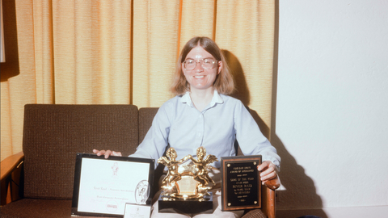

Carol Shaw - A primeira desenvolvedora de Jogos

Se você gosta de videogames, vai adorar conhecer a história de Carol Shaw. Nascida na região do Vale do Silício, no ano de 1955, ela é considerada a primeira mulher que começou a trabalhar com o desenvolvimento de jogos digitais.
Shaw criou softwares para games e consoles, sendo pioneira na geração procedural de conteúdo, que nada mais é que o aumento gradual da dificuldade nos níveis do jogo. Em várias de suas obras, uma fase era totalmente diferente da outra, conceito utilizado até hoje nos maiores títulos de jogos.
Com isso, a engenheira da computação foi uma das primeiras colaboradoras da Atari, trabalhando também em empresas como a Activision. Entre as suas principais contribuições, podemos citar os jogos:
- River Raid;
- Othello;
- 3D Tic Tac Toe;
- Super Breakout;
- Polo;
- Happy Trails.
Aposentadoria antecipada
Em 1984, Shaw saiu da Activision após completar o design do jogo Happy Trails, e outros de seus créditos como desenvolvedora ou designer de games ficam com os jogos Video Checkers (1978), Othello e Super Breakout (também de 1978). Além destes, ela também foi responsável por adaptar jogos para o console 8-bit da Atari, em 1979. Então Carol voltou a trabalhar na Tandem, onde permaneceu até 1990 – ano de sua aposentadoria antecipada. Nessa companhia, a desenvolvedora deixou de lado sua expertise com games para atuar mais como cientista da computação, trabalhando com programação na linguagem Assembly.
Aposentada antes de chegar à terceira idade graças ao imenso sucesso de River Raid, Carol Shaw passou a realizar trabalhos voluntários em organizações relacionadas à tecnologia. Uma dessas organizações por onde passou como voluntária foi o Foresight Institute, uma organização não governamental que visa promover tecnologias com potencial para transformar o mundo, como, por exemplo, a nanotecnologia molecular. Na ONG, Carol atuou como CIO cuidando da manutenção de computadores Macintosh e também de um servidor Windows NT, permanecendo no trabalho voluntário até 2001.
Atualmente, Carol Shaw vive uma vida tranquila na Califórnia com seu marido Ralph Merkle, um cientista e pesquisador na área de nanotecnologia com quem se casou em 1983.
(Des)igualdade de gêneros
Apesar de Shaw nunca ter se posicionado como feminista e não ter tido como objetivo de carreira a igualdade de gêneros, sua história acabou servindo como inspiração e porta de entrada para outras mulheres na indústria dos videogames. Shaw deixava claro em entrevistas que não queria medir forças com os programadores homens, ou virar ativista, mas sim trabalhava com jogos porque gostava de desenvolvê-los.
Mesmo sem “bater de frente” com os colegas homens, Carol enfrentava preconceito em sua rotina profissional. “Uma vez eu estava trabalhando no laboratório e o presidente da Atari, Ray Kassar, estava em visita. Ele me disse ‘Ah, enfim uma mulher designer de jogos. Ela pode fazer correspondência de cores e decoração de interior nos cartuchos’. Eram dois temas nos quais eu não tinha interesse.” Afinal, ela gostava mesmo era de desenvolver os games, não caindo no clichê do “toque feminino” no design das coisas.
Mas, apesar de ser um ícone na indústria de videogames representando as mulheres e sendo um símbolo do que uma mulher é capaz de conquistar mesmo em um segmento dominado por homens, Carol Shaw não enfatiza sua história como desenvolvedora de jogos e tenta levar uma vida discreta. Há alguns anos chegou a registrar o domínio “carol.com”, mas acabou não publicando nada sobre videogames em sua página, por não querer fama ou publicidade. Contudo, atualmente Carol Shaw não desconsidera voltar ao mercado de jogos eletrônicos com o crescimento dos games para smartphones.